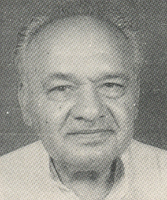
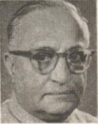
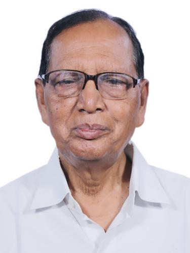
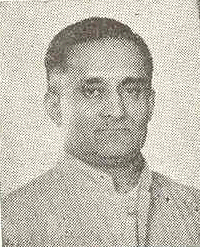
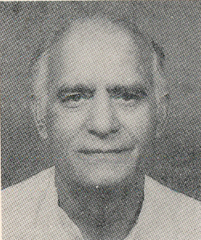
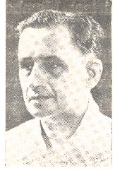

چمن لال گپتا
مکرر: ۱۹۹۹ - ۲۰۰۴

چنامنینی ودیا ساگر راؤ
مکرر: ۱۹۹۹ - ۲۰۰۴

چندریشور پرساد ٹھاکر
مکرر: ۱۹۹۹ - ۲۰۰۴

چدمبرم سبرامنیم
مکرر: ۱۹۶۲ - ۱۹۸۰
.jpg)
چودھری بریندر سنگھ
مکرر: ۲۰۱۴ - ۲۰۱۹
,_at_Pragati_Maidan,_in_New_Delhi.JPG)
چھوٹو رام چودھری
مکرر: ۲۰۱۶ - ۲۰۱۹

سی. پی. جوشی
مکرر: ۲۰۰۹ - ۲۰۱۳

چندولال چندراکر
مکرر: ۱۹۸۰ - ۱۹۸۶

چرن داس مہنت
مکرر: ۲۰۱۱ - ۲۰۱۴

چندر شیکھر ساہو
مکرر: ۲۰۰۶ - ۲۰۰۹

چنتامنی آبشار
مکرر: ۱۹۸۶ - ۱۹۸۹

چیپوڈیرا مٹھانا پوناچہ
مکرر: ۱۹۶۶ - ۱۹۶۹

چودھری موہن جتوا
مکرر: ۲۰۰۹ - ۲۰۱۲

چندر شیکھر
مکرر: ۱۹۹۰ - ۱۹۹۱

سی. آر. پٹبھیرامن
مکرر: ۱۹۶۲ - ۱۹۶۷

چندریش کماری
مکرر: ۲۰۱۲ - ۲۰۱۴

چرن سنگھ
مکرر: ۱۹۷۷ - ۱۹۸۰

چتوران مشرا
مکرر: ۱۹۹۶ - ۱۹۹۸

سی. سلویرا
مکرر: ۱۹۹۴ - ۱۹۹۶

چند رام
مکرر: ۱۹۷۷ - ۱۹۷۹

چندرجیت یادو
مکرر: ۱۹۷۴ - ۱۹۷۷

چنتا موہن
مکرر: ۱۹۹۱ - ۱۹۹۳

مغرب میں دوارکاناتھ دیشمکھ
مکرر: ۱۹۵۲ - ۱۹۵۶

چندیشور پرساد نارائن سنگھ
مکرر: ۱۹۸۰ - ۱۹۸۲
.jpg)
سی. ایم. ابراہیم
مکرر: ۱۹۹۶ - ۱۹۹۸

سی. ایم. سٹیفن
مکرر: ۱۹۸۰ - ۱۹۸۳

چندردیو پرساد ورما
مکرر: ۱۹۹۶ - ۱۹۹۷

چمن بھائی مہتا
مکرر: ۱۹۹۰ - ۱۹۹۰

چیتنیا پرساد ماجھی۔
مکرر: ۱۹۷۴ - ۱۹۷۷

چھترپال سنگھ لودھا
مکرر: ۲۰۰۳ - ۲۰۰۴

چرنجیوی
مکرر: ۲۰۱۲ - ۲۰۱۴

چرنجیت چنا
مکرر: ۱۹۸۰ - ۱۹۸۲

چودھری نیتیراج سنگھ
مکرر: ۱۹۷۰ - ۱۹۷۴

چودھری برہم پرکاش
مکرر: ۱۹۷۹ - ۱۹۸۰

چارو چندر بسواس
مکرر: ۱۹۵۲ - ۱۹۵۲

چودھری دیوی لال
مکرر: ۱۹۸۹ - ۱۹۹۱

کوورجی ہرموس جی بھابھا
مکرر: ۱۹۴۷ - ۱۹۵۰

چندر شیکھر سنگھ
مکرر: ۱۹۸۳ - ۱۹۸۶

چودھری دلبیر سنگھ
مکرر: ۱۹۷۱ - ۱۹۸۴

چراغ پاسوان
مکرر: ونیہ کینس - ونیہ کینس

چندرکانت رگھوناتھ پاٹل
مکرر: ونیہ کینس - ونیہ کینس